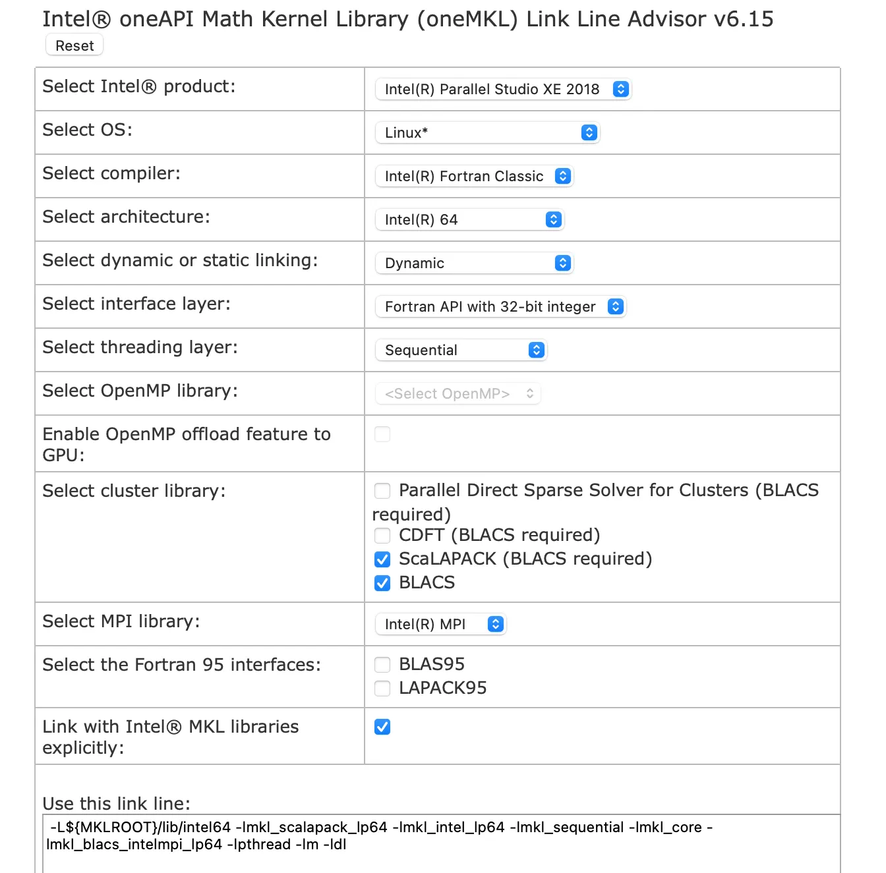

Computação de alto desempenho (HPC)
Para cálculos computacionalmente pesados, precisamos de acesso a recursos de computação de alto desempenho.
Comandos UNIX úteis
Conectar a um nó de login via ssh:
ssh {username}@atlas9.nus.edu.sgCopiar arquivos entre a máquina local e a remota com segurança:
scp {username}@10.10.0.2:/remote/file.txt /local/directory
scp local/file.txt {username}@10.10.0.2:/remote/directoryVerificar o uso de disco:
du -hs .
du -hs /path/Rsync para sincronizar duas pastas:
rsync -azhv --delete /source/my_project/ /destination/my_projectRodando trabalhos no HPC da NUS
Verificar a sua cota de armazenamento:
hpc sComandos do PBS:
hpc pbs summaryScripts de exemplo para submissão de trabalhos:
hpc pbs script parallel20
hpc pbs vaspListar os módulos disponíveis:
module availCarregar um módulo:
module load {module-name}Descarregar todos os módulos:
module purgeO Quantum ESPRESSO já está instalado nos clusters de HPC da NUS. Aqui está um script de exemplo para os clusters do HPC da NUS:
#!/bin/bash
#PBS -q parallel24
#PBS -l select=2:ncpus=24:mpiprocs=24:mem=96GB
#PBS -j eo
#PBS -N qe-project-xx
source /etc/profile.d/rec_modules.sh
module load espresso6.5-intel_18
## module load espresso6.5-Centos6_Intel
cd $PBS_O_WORKDIR;
np=$( cat ${PBS_NODEFILE} | wc -l );
mpirun -np $np -f ${PBS_NODEFILE} pw.x -inp qe-scf.in > qe-scf.outNote que as linhas que começam com #PBS são comandos do PBS, não comentários. Para comentários, uso ##.
Consultar um sistema de filas:
qstat -qVer o estado de uma fila específica:
qstat -Qx parallel24Submeter um trabalho:
qsub pbs_job.shVer os trabalhos em execução:
qstatDetalhes de um trabalho:
qstat -f {job-id}Interromper um trabalho:
qdel {job-id}Interromper e reiniciar um cálculo
Se precisar mudar algum parâmetro com o programa em execução (por exemplo, alterar o mixing_beta porque a precisão do SCF está oscilando sem sinal de convergência), crie um arquivo vazio chamado {prefix}.EXIT no diretório do arquivo de entrada ou no outdir definido no card &CONTROL do input.
touch {prefix}.EXITIsso faz o programa parar na próxima iteração e salvar o estado. Para reiniciar, defina restart_mode no card &CONTROL como 'restart' e rode de novo após as mudanças necessárias. É preciso ressubmeter o trabalho com o mesmo número de processadores.
&CONTROL
...
restart_mode = 'restart'
...
/Compilando o Quantum ESPRESSO com a Intel® Math Kernel Library (MKL)
Se precisar de uma versão mais nova ou específica do Quantum ESPRESSO que não esteja instalada nos clusters da NUS, ou se tiver modificado o código-fonte, estes são os passos que segui para compilar com sucesso.
O projeto Quantum ESPRESSO é hospedado principalmente no GitLab, com um espelho no GitHub. Consulte o repositório no GitLab para informações mais atualizadas. Os releases no GitLab ficam em: https://gitlab.com/QEF/q-e/-/releases
Baixe e descompacte o código-fonte.
wget https://gitlab.com/QEF/q-e/-/archive/qe-7.2/q-e-qe-7.2.tar.gz
tar -zxvf q-e-qe-7.2.tar.gzCarregue os módulos necessários (válido para os clusters da NUS, verificado pela última vez em junho de 2022):
module load xe_2018
module load fftw/3.3.7Entre no diretório do QE e rode o configure:
cd q-e-qe-7.2
./configureVocê verá uma saída parecida com:
...
BLAS_LIBS= -lmkl_intel_lp64 -lmkl_sequential -lmkl_core
LAPACK_LIBS=
FFT_LIBS=
...No meu caso, as bibliotecas LAPACK_LIBS e FFT_LIBS não foram detectadas automaticamente e precisaram ser indicadas manualmente. Primeiro, obtenha a linha de link específica da sua versão da MKL e das demais configurações no Intel link advisor. No meu caso, a linha foi:
-L${MKLROOT}/lib/intel64 -lmkl_scalapack_lp64 -lmkl_intel_lp64 -lmkl_sequential -lmkl_core -lmkl_blacs_intelmpi_lp64 -lpthread -lm -ldl
Precisamos inserir os links para BLAS_LIBS, LAPACK_LIBS e SCALAPACK_LIBS. Também precisamos descobrir onde está a biblioteca FFTW. No HPC da NUS, o comando module avail mostra onde cada módulo está, geralmente em /app1/modules/. Abra o make.inc e faça as seguintes alterações:
# ...
CFLAGS = -O2 $(DFLAGS) $(IFLAGS)
CFLAGS = -O3 $(DFLAGS) $(IFLAGS)
F90FLAGS = $(FFLAGS) -nomodule -fpp $(FDFLAGS) $(CUDA_F90FLAGS) $(IFLAGS) $(MODFLAGS)
# compiler flags with and without optimization for fortran-77
# the latter is NEEDED to properly compile dlamch.f, used by lapack
- FFLAGS = -O2 -assume byterecl -g -traceback
+ FFLAGS = -O3 -assume byterecl -g -traceback
FFLAGS_NOOPT = -O0 -assume byterecl -g -traceback
# ...
# If you have nothing better, use the local copy
# BLAS_LIBS = $(TOPDIR)/LAPACK/libblas.a
- BLAS_LIBS = -lmkl_intel_lp64 -lmkl_sequential -lmkl_core
+ BLAS_LIBS = -L${MKLROOT}/lib/intel64 -lmkl_scalapack_lp64 -lmkl_intel_lp64 -lmkl_sequential -lmkl_core -lmkl_blacs_intelmpi_lp64 -lpthread -lm -ldl
# If you have nothing better, use the local copy
# LAPACK = liblapack
# LAPACK_LIBS = $(TOPDIR)/external/lapack/liblapack.a
- LAPACK =
+ LAPACK = liblapack
- LAPACK_LIBS =
+ LAPACK_LIBS = -L${MKLROOT}/lib/intel64 -lmkl_scalapack_lp64 -lmkl_intel_lp64 -lmkl_sequential -lmkl_core -lmkl_blacs_intelmpi_lp64 -lpthread -lm -ldl
- SCALAPACK_LIBS =
+ SCALAPACK_LIBS = -L${MKLROOT}/lib/intel64 -lmkl_scalapack_lp64 -lmkl_intel_lp64 -lmkl_sequential -lmkl_core -lmkl_blacs_intelmpi_lp64 -lpthread -lm -ldl
# nothing is needed here if the internal copy of FFTW is compiled
# (needs -D__FFTW in DFLAGS)
- FFT_LIBS =
+ FFT_LIBS = -L/app1/centos6.3/gnu/fftw/3.3.7/lib/ -lmpi
# ...Agora podemos compilar:
make -j8 allEstou paralelizando com 8 processadores para acelerar. Você pode adicionar o caminho q-e-qe-7.2/bin ao seu .bashrc:
echo 'export PATH="/home/svu/{username}/q-e-qe-7.2/bin:$PATH"' >> ~/.bashrcE não esqueça de carregar as dependências antes de chamar os executáveis do QE.
module load xe_2018
module load fftw/3.3.7Se for submeter o trabalho pela fila do PBS, informe o caminho completo dos executáveis do QE, por exemplo /home/svu/{username}/q-e-qe-7.2/bin/pw.x. O PBS não lê as suas configurações do bash, e os caminhos relativos do nó de login também não valem.
Instalando as bibliotecas Intel oneAPI
Se precisar instalar as bibliotecas Intel oneAPI por conta própria, as instruções a seguir podem ser úteis. Consulte o site da Intel para informações atualizadas.
Intel oneAPI Base Toolkit:
wget https://registrationcenter-download.intel.com/akdlm/IRC_NAS/992857b9-624c-45de-9701-f6445d845359/l_BaseKit_p_2023.2.0.49397_offline.sh
# requires gnu-awk
sudo apt update && sudo apt install -y --no-install-recommends gawk gcc g++
# interactive cli installation
sudo apt install -y --no-install-recommends ncurses-term
sudo sh ./l_BaseKit_p_2023.2.0.49397_offline.sh -a --cli
# list components included in oneAPI Base Toolkit
sh ./l_BaseKit_p_2023.2.0.49397_offline.sh -a --list-components
# install a subset of components with silent/unattended option
sudo sh ./l_BaseKit_p_2023.2.0.49397_offline.sh -a --silent --eula accept --components intel.oneapi.lin.dpcpp-cpp-compiler:intel.oneapi.lin.mkl.develSe instalar o oneAPI sem privilégio de sudo, ele será instalado no diretório do usuário: /home/{username}/intel/oneapi/. Ao fim da instalação, o script mostra o local de instalação.
HPC Toolkit
wget https://registrationcenter-download.intel.com/akdlm/IRC_NAS/0722521a-34b5-4c41-af3f-d5d14e88248d/l_HPCKit_p_2023.2.0.49440_offline.sh
sudo sh ./l_HPCKit_p_2023.2.0.49440_offline.sh -a --silent --eula acceptBiblioteca Intel MKL
Instalando componentes individuais:
wget https://registrationcenter-download.intel.com/akdlm/IRC_NAS/adb8a02c-4ee7-4882-97d6-a524150da358/l_onemkl_p_2023.2.0.49497_offline.sh
sudo sh ./l_onemkl_p_2023.2.0.49497_offline.sh -a --silent --eula acceptApós a instalação, não esqueça de carregar as variáveis de ambiente com source antes de usar:
source /opt/intel/oneapi/setvars.shCompile o Quantum ESPRESSO:
wget https://gitlab.com/QEF/q-e/-/archive/qe-7.2/q-e-qe-7.2.tar.gz
tar -zxvf q-e-qe-7.2.tar.gz
rm q-e-qe-7.2.tar.gz
cd q-e-qe-7.2
./configure \
F90=mpiifort \
MPIF90=mpiifort \
CC=mpicc CXX=icc \
F77=mpiifort \
FFLAGS="-O3 -assume byterecl -g -traceback" \
LAPACK_LIBS="-L${MKLROOT}/lib/intel64 -lmkl_scalapack_lp64 -lmkl_intel_lp64 -lmkl_sequential -lmkl_core -lmkl_blacs_intelmpi_lp64 -lpthread -lm -ldl" \
BLAS_LIBS="-L${MKLROOT}/lib/intel64 -lmkl_scalapack_lp64 -lmkl_intel_lp64 -lmkl_sequential -lmkl_core -lmkl_blacs_intelmpi_lp64 -lpthread -lm -ldl" \
SCALAPACK_LIBS="-L${MKLROOT}/lib/intel64 -lmkl_scalapack_lp64 -lmkl_intel_lp64 -lmkl_sequential -lmkl_core -lmkl_blacs_intelmpi_lp64 -lpthread -lm -ldl"
make -j4 allCompilando o Quantum ESPRESSO com CMake
Consulte a documentação oficial para mais detalhes. É necessário o cmake na versão 3.14 ou mais recente.
apt update && apt install autoconf cmake gawk gcc g++ makeSegui estes passos para compilar o Quantum ESPRESSO com as versões 2023 das bibliotecas Intel em um sistema Ubuntu 22.04:
cd q-e-qe-7.2
mkdir build && cd build
cmake -DCMAKE_C_COMPILER=mpiicc -DCMAKE_Fortran_COMPILER=mpiifort -DQE_ENABLE_SCALAPACK=ON ..
make -j4
mv bin ..
cd ..
rm -rf buildRecursos
- https://nusit.nus.edu.sg/services/getting-started/introductory-guide-for-new-hpc-users/
- https://www.youtube.com/watch?v=doudMLEaq3w
Conteúdo adaptado de High Performance Computing, do Quantum Espresso Tutorial de Pranab Das, sob licença CC BY 4.0. Alterações: texto traduzido para o português; layout e navegação adaptados.